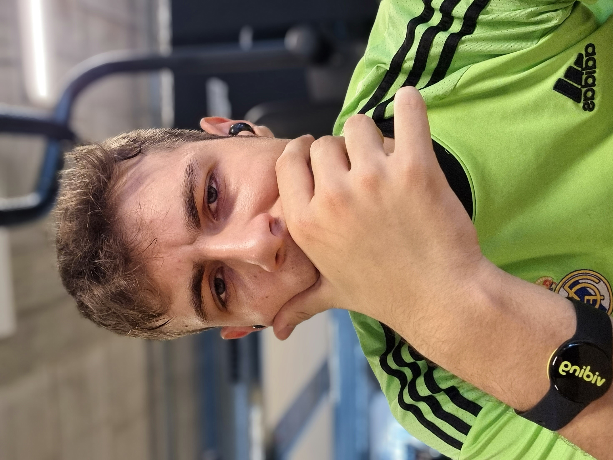
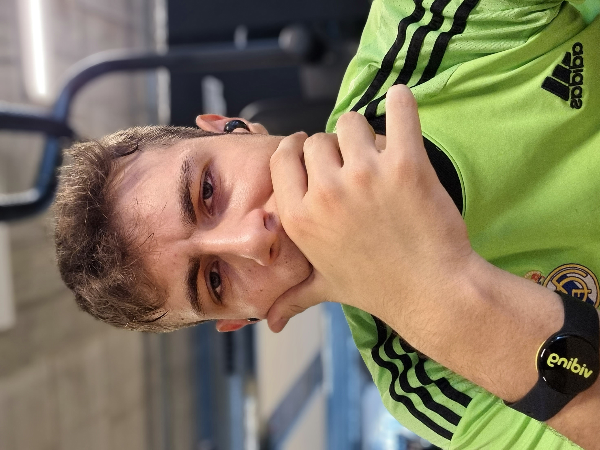
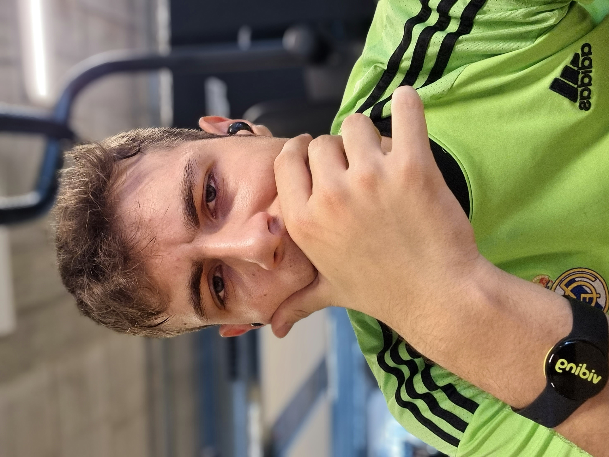
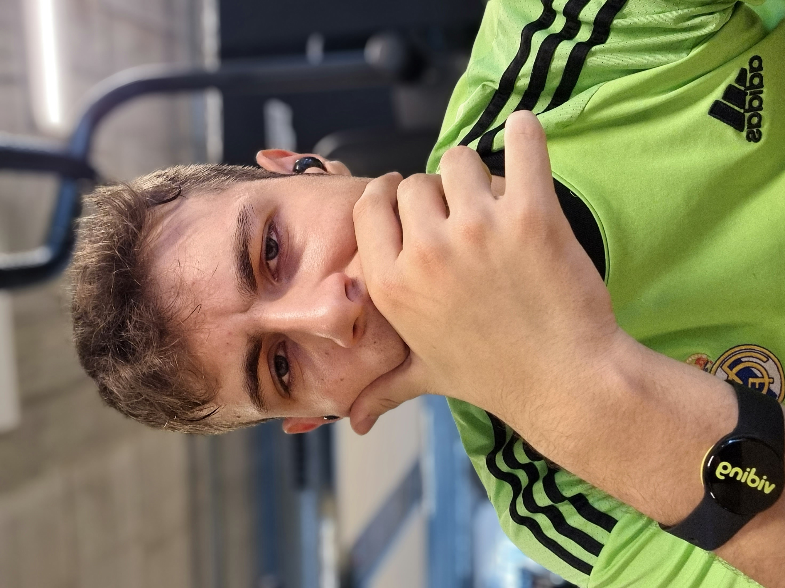

Carlos López Martínez
.jpg) 



Carlos López es un joven desarollador web y hacker, apasionado de la informática, le encanta el fútbol el gaming y sobre todo Star Wars, es uno de los mejores en su campo, campeón de la FNCS de Fortnite 2 veces y campeón mundial de FIFA por 3 años seguidos, pero su mayo logro, es ser campeon mundial de Star Wars Battlefront tras estar 56 horas seguidas jugando contra los mejores del mundo, además le gusta cocinar y conducir a grandes velocidades con sus supercoches que ha comprado.
Aqui algunas de sus mejores anecdotas que seguro que te sorprenderan:
Desarollador web jefe - Empresa Apple (2020 - 2022)
Consultor de ciberseguridad jefe - Empresa Accenture Security (2023 - Actualidad)
Master en hacking ético - Universidad de Machachusets (2021 - 2023)
Master en ciberseguridad - Universidad de Wichita (2021 - 2023)
Bachillerato - Colegio El Pilar (2021 - 2023)
E.S.O - Colegio El Pilar (2017 - 2021)
Campeón de FNCS Fortnite - (2017,2018)
Campeón mundial de FIFA - (2019,2020,2021)
Campeón mundial de Star Wars Battlefront II - (2022)
Campeón de futbolin - (2015)
Campeón torneo alevin con la Ponferradina - (2016)